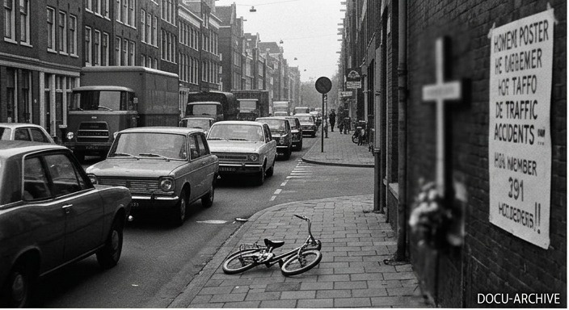
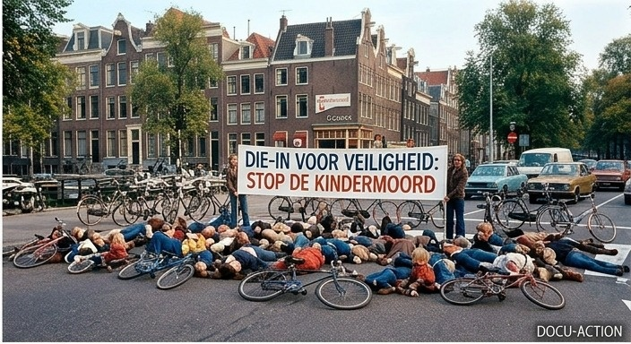
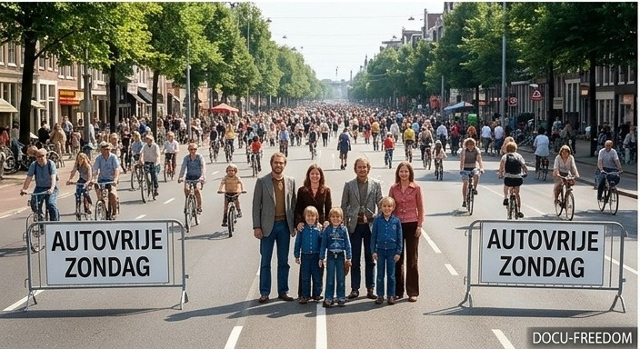
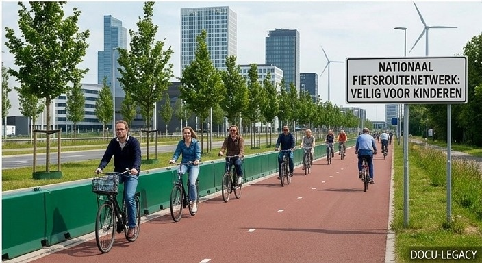

Dans les années 1970, les Pays-Bas ont connu une vague de colère citoyenne historique, incarnée par le mouvement «Stop de Kindermoord». Profondément choqués par la hausse tragique du nombre d'enfants tués dans des accidents de la route à cause de la toute-puissance de la voiture en ville, des milliers de parents et de militants ont organisé des manifestations massives et bloqué des rues pour réclamer des espaces sécurisés. Ce mouvement contestait frontalement la politique d'aménagement urbain de l'époque qui donnait la priorité absolue aux véhicules motorisés au détriment de la vie humaine.
Cette pression populaire inédite, renforcée par la crise pétrolière de 1973 qui a imposé des « dimanches sans voiture », a contraint le gouvernement néerlandais à opérer un virage radical. Au lieu de construire de nouvelles autoroutes en plein cœur des villes, les autorités ont redirigé les investissements vers la création de pistes cyclables protégées et de zones piétonnes. C'est grâce à cette lutte citoyenne courageuse que les Pays-Bas ont posé les bases de leur modèle actuel, devenant la référence mondiale incontestée de la mobilité à vélo.
Flux d'Actualités
La crise des accidents mortels chez les enfants. Date de publication :

Une rue encombrée de voitures à Amsterdam dans les années 1970. La présence d'un petit vélo renversé et seul illustre tragiquement l'insécurité des enfants face à la motorisation urbaine galopante.
Au début des années 1970, la motorisation urbaine rapide aux Pays-Bas a créé un environnement périlleux pour les piétons et les jeunes cyclistes, culminant avec un bilan dévastateur de 3 300 morts sur les routes en 1971, dont tragiquement plus de 400 enfants. Ces statistiques alarmantes ont provoqué une vive émotion publique, révélant à quel point les rues des villes avaient été abandonnées à la domination automobile au détriment de la sécurité humaine.
La naissance du mouvement « Stop de Kindermoord ». Date de publication :

Manifestation die-in aux Pays-Bas. Des familles et des militants s'allongent sur l'asphalte pour bloquer un carrefour, brandissant la pancarte « Stop de Kindermoord » (Halte au meurtre d'enfants), exigeant des rues sûres.
Révoltés par la perte croissante de jeunes vies, le journaliste Vic Langenhoff et des parents endeuillés ont fondé le groupe d'action « Stop de Kindermoord »(Halte au meurtre d'enfants) en septembre 1972. Les manifestants ont organisé des actions spectaculaires en bloquant des carrefours dangereux, en s'allongeant sur la chaussée avec leurs vélos et en exigeant une refonte profonde de l'urbanisme afin de faire passer la vie des enfants avant le confort des automobilistes.
La crise pétrolière de 1973 et les dimanches sans voiture. Date de publication :

Image de liberté : Un dimanche sans voiture à Amsterdam en 1973. La population se réroprie l'asphalte libéré des automobiles, une vision qui changera la perception des espaces urbains.
La grave crise pétrolière mondiale de novembre 1973 a contraint le gouvernement néerlandais à mettre en place des mesures d'urgence pour économiser le carburant, instaurant notamment une série de dimanches sans voiture. Les grands axes autoroutiers étant totalement vidés de leurs automobiles, les citoyens ont reconquis l'asphalte à pied et à vélo, offrant une vision concrète et marquante d'espaces urbains paisibles et sans pollution qui a durablement transformé les mentalités.
La création d'un réseau cyclable national. Date de publication :

Image d'héritage : Un large itinéraire cyclable national aux Pays-Bas. Cette piste protégée en asphalte rouge, séparée du trafic automobile et sécurisée pour les enfants, représente le résultat durable du mouvement.
S'appuyant sur la pression citoyenne constante et sur de nouvelles organisations de défense comme la "Fietsersbond" fondée en 1975, le gouvernement néerlandais a officiellement opéré un virage dans sa politique des transports. Les autorités ont abandonné leurs projets d'autoroutes urbaines pour financer à la place de vastes réseaux de pistes cyclables protégées, des zones résidentielles apaisées ("woonerfs") et des infrastructures sûres qui ont transformé le pays en capitale mondiale du vélo.
Espace Podcast & Transcriptions
Afficher la transcription
Transcription : « Les cris de la rue : Ambiance des manifestations de 1973 »
[Ambiance sonore : Bruits de sonnettes de vélos en chœur et brouhaha d'une foule dense sur les pavés d'Amsterdam.]
La foule de manifestants (00:12)
« Stop de Kindermoord ! De straat is van ons ! » (Halte au meurtre d'enfants ! La rue est à nous !)
Mère de famille, quartier De Pijp (00:25)
« Nous n'avons plus peur de le dire : nos quartiers sont devenus invivables. Chaque matin, quand mes enfants partent à l'école à vélo, j'ai l'estomac noué. Les voitures prennent toute la place. Aujourd'hui, nous bloquons ce carrefour pour qu'on nous écoute enfin. »
Journaliste sur place (00:48)
« Ici à Amsterdam, des centaines de parents et d'enfants sont assis directement sur l'asphalte avec leurs bicyclettes, paralysant complètement la circulation automobile sous les applaudissements des riverains. »
Militant au mégaphone (01:02)
« Nous ne voulons pas d'autoroutes au milieu de nos maisons ! Nous voulons des pistes cyclables protégées, des arbres et des espaces où nos enfants peuvent jouer sans risquer leur vie ! »
Données Statistiques
Classement des contributeurs du webzine « Enfants sur l'asphalte : La genèse de la révolte »
Rang
Rédacteur
Spécialité
Articles publiés
1
Vic Langenhoff
Activisme citoyen & Histoire
14
2
Sophie van Dijk
Urbanisme & Infrastructures cyclables
11
3
Lucas de Vries
Archives audiovisuelles & Podcasts
8
4
Claire Moreau
Politiques énergétiques des années 1970
6
Total des articles publiés
39
Carte interactive : Les lieux clés de la révolte à Amsterdam
Cliquez sur les zones circulaires ou rectangulaires de la carte pour découvrir les actions menées dans les différents quartiers d'Amsterdam en 1973.